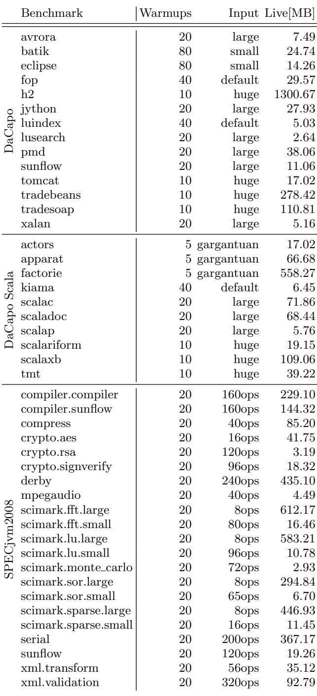
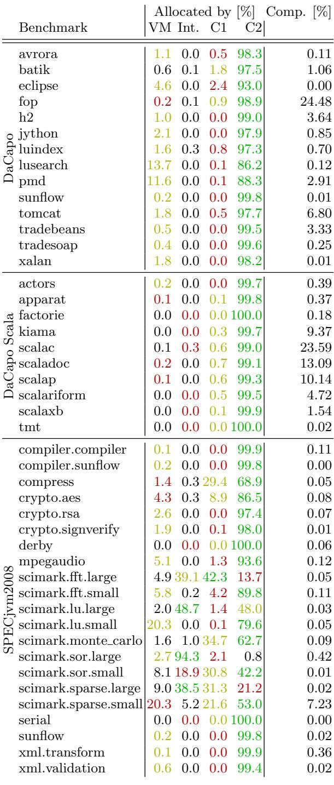
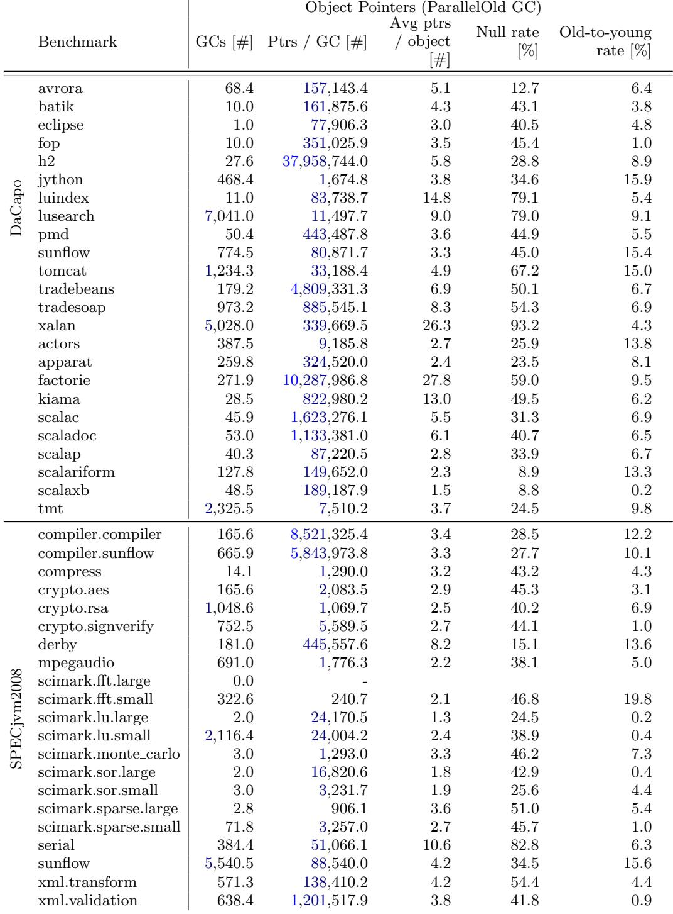
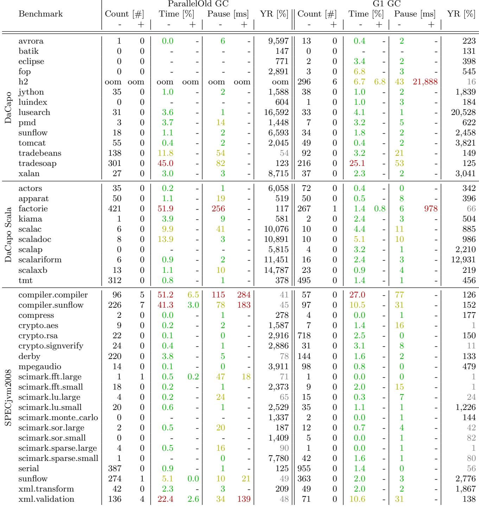
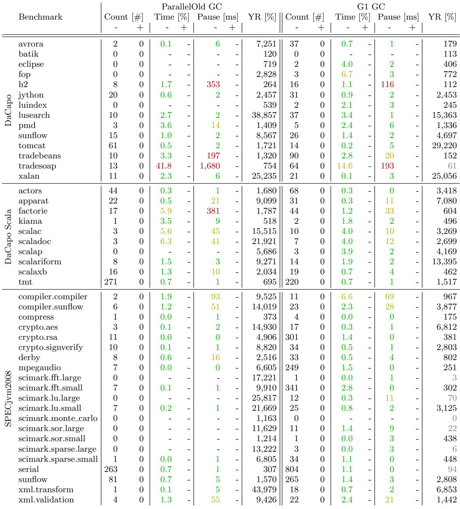

A Comprehensive Java Benchmark Study on Memory and Garbage Collection Behavior of DaCapo, DaCapo Scala, and SPECjvm2008 图表详解¶
963a09d8d4ee7b97d1a6be63240d79dca9cb1a6c79ec017d08e8ad8c0a13c731.jpg¶

- 图片内容为一张表格，详细列出了用于研究的三个 Java 基准测试套件（DaCapo、DaCapo Scala、SPECjvm2008）中各个基准测试的配置参数。
- 表格包含四列：Benchmark（基准测试名称）、Warmups（预热次数）、Input（输入规模）、Live[MB]（存活内存大小，单位 MB）。
- DaCapo 套件包含 14 个基准测试，如
avrora、h2、lusearch等。其中h2的存活内存高达 1300.67 MB，是所有基准中最高的；而lusearch的存活内存仅为 2.64 MB，是 DaCapo 中最低的。 - DaCapo Scala 套件包含 11 个基准测试，如
actors、factorie、tmt等。factorie的存活内存为 558.27 MB，是该套件中最高的；kiama仅 6.45 MB，为最低。 - SPECjvm2008 套件包含 21 个基准测试，如
compiler.compiler、scimark.fft.large、serial等。scimark.fft.large的存活内存为 612.17 MB，是该套件中最高的；crypto.rsa仅 3.19 MB，为最低。 - 输入规模（Input）在不同套件中表示方式不同：
- DaCapo 和 DaCapo Scala 使用
small、default、large、huge、gargantuan等描述性词汇。 - SPECjvm2008 使用操作数（如
160ops、240ops）来表示工作负载大小。
- DaCapo 和 DaCapo Scala 使用
- 预热次数（Warmups）根据基准测试和输入规模进行了调整，范围从 5 次（如 DaCapo Scala 的
actors、apparat、factorie）到 80 次（如 DaCapo 的batik、eclipse）。 - 该表格是论文第 2 节“Methodology”中 Figure 1 的可视化呈现，用于说明实验设置，确保结果可复现。
| Benchmark | Warmups | Input | Live[MB] |
|---|---|---|---|
| DaCapo | |||
| avrora | 20 | large | 7.49 |
| batik | 80 | small | 24.74 |
| eclipse | 80 | small | 14.26 |
| fop | 40 | default | 29.57 |
| h2 | 10 | huge | 1300.67 |
| jython | 20 | large | 27.93 |
| luindex | 40 | default | 5.03 |
| lusearch | 20 | large | 2.64 |
| pmd | 20 | large | 38.06 |
| sunflow | 20 | large | 11.06 |
| tomcat | 10 | huge | 17.02 |
| tradebeans | 10 | huge | 278.42 |
| tradesoap | 10 | huge | 110.81 |
| xalan | 20 | large | 5.16 |
| DaCapo Scala | |||
| actors | 5 | gargantuan | 17.02 |
| apparat | 5 | gargantuan | 66.68 |
| factorie | 5 | gargantuan | 558.27 |
| kiama | 40 | default | 6.45 |
| scalac | 20 | large | 71.86 |
| scaladoc | 20 | large | 68.44 |
| scalap | 20 | large | 5.76 |
| scalariform | 10 | huge | 19.15 |
| scalaxb | 10 | huge | 109.06 |
| tmt | 10 | huge | 39.22 |
| SPECjvm2008 | |||
| compiler.compiler | 20 | 160ops | 229.10 |
| compiler.sunflow | 20 | 160ops | 144.32 |
| compress | 20 | 40ops | 85.20 |
| crypto.aes | 20 | 16ops | 41.75 |
| crypto.rsa | 20 | 120ops | 3.19 |
| crypto.signverify | 20 | 96ops | 18.32 |
| derby | 20 | 240ops | 435.10 |
| mpegaudio | 20 | 40ops | 4.49 |
| scimark.fft.large | 20 | 8ops | 612.17 |
| scimark.fft.small | 20 | 80ops | 16.46 |
| scimark.lu.large | 20 | 8ops | 583.21 |
| scimark.lu.small | 20 | 96ops | 10.78 |
| scimark.monte_carlo | 20 | 72ops | 2.93 |
| scimark.sor.large | 20 | 8ops | 294.84 |
| scimark.sor.small | 20 | 65ops | 6.70 |
| scimark.sparse.large | 20 | 8ops | 446.93 |
| scimark.sparse.small | 20 | 16ops | 11.45 |
| serial | 20 | 200ops | 367.17 |
| sunflow | 20 | 120ops | 19.26 |
| xml.transform | 20 | 56ops | 35.12 |
| xml.validation | 20 | 320ops | 92.79 |
3e3f97b8269e961ed27a2e581ab9c22f654959e2495c52dbe5ac9e229bcb2655.jpg¶

- 图片 3e3f97b8269e961ed27a2e581ab9c22f654959e2495c52dbe5ac9e229bcb2655.jpg 展示了 DaCapo、DaCapo Scala 和 SPECjvm2008 三大 Java 基准测试套件中各基准程序的内存分配行为与对象布局特征，数据基于自适应堆大小（三倍于 live size）和 ParallelOld GC 配置。
- 总分配量：以对象数量和字节数衡量。factorie（DaCapo Scala）以 5,716,589.7 × 10³ 对象 和 137,521.8 MB 的分配量位居榜首，是所有基准中最“重”的内存消费者。紧随其后的是 derby（SPECjvm2008）和 sunflow（SPECjvm2008），它们在对象数和字节数上均位列前五。
- 分配速率：衡量每秒分配的对象数和字节数。tmt（DaCapo Scala）以 54,697.7 × 10³ 对象/秒 和 1,340.9 MB/秒 的速率成为最“快”的分配者。derby 和 serial（SPECjvm2008）也表现出极高的分配速率，对 GC 频率构成直接压力。
- 对象布局：揭示了对象的平均大小、数组对象占比及平均数组长度。
- 最大对象：scimark.fft.large（SPECjvm2008）拥有最大的平均对象尺寸，高达 66,335.2 字节，但因其运行时间短、分配率低，实际内存压力较小。
- 最高数组比例：mpegaudio（SPECjvm2008）的数组对象占比高达 97.5%，而 sunflow（SPECjvm2008）则低至 3.4%，显示出显著的应用差异。
- 最长数组：scimark.fft.large（SPECjvm2008）的平均数组长度为 157,485.6，远超其他基准，这与其处理大型矩阵的特性相符。crypto.rsa 和 crypto.signverify 也因加密操作生成了长数组。
下表总结了关键指标的前三名：
| 指标 | 第一名 | 数值 | 第二名 | 数值 | 第三名 | 数值 |
|---|---|---|---|---|---|---|
| 总对象数 (×10³) | factorie | 5,716,589.7 | tmt | 2,663,579.5 | derby | 2,001,219.7 |
| 总字节数 (MB) | factorie | 137,521.8 | sunflow | 93,002.4 | derby | 77,974.7 |
| 对象分配速率 (×10³/sec) | tmt | 54,697.7 | factorie | 37,494.4 | derby | 86,931.7 |
| 字节分配速率 (MB/sec) | tmt | 1,340.9 | factorie | 902.0 | derby | 3,387.2 |
| 平均对象大小 (字节) | scimark.fft.large | 66,335.2 | scimark.sor.large | 1,916.6 | scimark.lu.large | 1,985.1 |
| 数组对象比例 (%) | mpegaudio | 97.5 | scimark.lu.small | 99.1 | scimark.sor.small | 70.1 |
| 平均数组长度 | scimark.fft.large | 157,485.6 | crypto.rsa | 61,137.9 | scimark.sparse.large | 141,717.1 |
- 跨套件观察：SPECjvm2008 套件普遍展现出更高的平均数组长度，这源于其包含大量处理大输入数据或矩阵运算的基准（如 compress, crypto., scimark.）。相比之下，DaCapo 和 DaCapo Scala 的对象布局更为多样。
- 特殊案例：lusearch 和 pmd 基准程序因滥用异常（Exception）作为控制流，导致大量 VM 内部对象被分配，这并非其核心业务逻辑所需，属于需要特别注意的“怪癖”。
Figure 3: Objects allocated by VM-internal code, interpreted code, C1 compiled code, or by C2 compiled code respectively (green: 1st top allocator, yellow: 2nd top allocator, red: 3rd top allocator), as well as the time spent compiling in relation to the overall run time¶

- 图片 04aef8cc3d18bbf1810729558772827aebd246a8ea33569bddd0fb2e839e0c04.jpg 展示的是 Figure 3，其核心内容是各 Java 基准测试程序中对象分配的来源分布（VM 内部、解释执行、C1 编译、C2 编译）以及编译时间占总运行时间的比例。
- 数据按基准套件分组：DaCapo、DaCapo Scala 和 SPECjvm2008。
- 分配来源以百分比形式呈现，并用颜色编码表示主导程度：绿色代表第一大分配源，黄色为第二大，红色为第三大。
- 编译时间占比（Comp. [%]）列显示了 JIT 编译所消耗的时间比例。
以下是数据表格化整理：
| Benchmark | Allocated by [%] VM Int. | C1 | C2 | Comp. [%] |
|---|---|---|---|---|
| DaCapo | ||||
| avrora | 1.1 | 0.0 | 98.3 | 0.11 |
| batik | 0.6 | 0.1 | 97.5 | 1.06 |
| eclipse | 4.6 | 0.0 | 93.0 | 0.00 |
| fop | 0.2 | 0.1 | 98.9 | 24.48 |
| h2 | 1.0 | 0.0 | 99.0 | 3.64 |
| jython | 2.1 | 0.0 | 97.9 | 0.85 |
| luindex | 1.6 | 0.3 | 97.3 | 0.70 |
| lusearch | 13.7 | 0.0 | 86.2 | 0.12 |
| pmd | 11.6 | 0.0 | 88.3 | 2.91 |
| sunflow | 0.2 | 0.0 | 99.8 | 0.01 |
| tomcat | 1.8 | 0.0 | 97.7 | 6.80 |
| tradebeans | 0.5 | 0.0 | 99.5 | 3.33 |
| tradesoap | 0.4 | 0.0 | 99.6 | 0.25 |
| xalan | 1.8 | 0.0 | 98.2 | 0.01 |
| DaCapo Scala | ||||
| actors | 0.2 | 0.0 | 99.7 | 0.39 |
| apparat | 0.1 | 0.0 | 99.8 | 0.37 |
| factorie | 0.0 | 0.0 | 100.0 | 0.18 |
| kiama | 0.0 | 0.0 | 99.7 | 9.37 |
| scalac | 0.1 | 0.3 | 99.0 | 23.59 |
| scaladoc | 0.2 | 0.6 | 99.1 | 13.09 |
| scalap | 0.1 | 0.0 | 99.3 | 10.14 |
| scalariform | 0.0 | 0.0 | 99.5 | 4.72 |
| scalaxb | 0.0 | 0.0 | 99.9 | 1.54 |
| tmt | 0.0 | 0.0 | 100.0 | 0.02 |
| SPECjvm2008 | ||||
| compiler.compiler | 0.1 | 0.0 | 99.9 | 0.11 |
| compiler.sunflow | 0.2 | 0.0 | 99.8 | 0.00 |
| compress | 1.4 | 0.3 | 68.9 | 0.05 |
| crypto.aes | 4.3 | 0.3 | 86.5 | 0.08 |
| crypto.rsa | 2.6 | 0.0 | 97.4 | 0.07 |
| crypto.signverify | 1.9 | 0.0 | 98.0 | 0.01 |
| derby | 0.0 | 0.0 | 100.0 | 0.06 |
| mpegaudio | 5.1 | 0.0 | 93.6 | 0.12 |
| scimark.fft.large | 4.9 | 39.1 | 13.7 | 0.05 |
| scimark.fft.small | 5.8 | 0.2 | 89.8 | 0.11 |
| scimark.lu.large | 2.0 | 48.7 | 48.0 | 0.03 |
| scimark.lu.small | 20.3 | 0.0 | 79.6 | 0.05 |
| scimark.monte_carlo | 1.6 | 1.0 | 62.7 | 0.09 |
| scimark.sor.large | 2.7 | 94.3 | 0.8 | 0.42 |
| scimark.sor.small | 8.1 | 18.9 | 42.2 | 0.01 |
| scimark.sparse.large | 9.0 | 38.5 | 21.2 | 0.02 |
| scimark.sparse.small | 20.3 | 5.2 | 53.0 | 7.23 |
| serial | 0.0 | 0.0 | 100.0 | 0.00 |
| sunflow | 0.2 | 0.0 | 99.8 | 0.02 |
| xml.transform | 0.1 | 0.0 | 99.9 | 0.36 |
| xml.validation | 0.6 | 0.0 | 99.4 | 0.02 |
- 多数基准测试中，C2 编译代码是主要的对象分配来源，表明在稳定状态下，JIT 已充分优化并接管了大部分执行。
- lusearch 和 pmd 是显著异常值，它们分别有 13.7% 和 11.6% 的对象由 VM 内部代码分配，这源于它们滥用
Exception进行控制流，导致大量栈跟踪填充操作。 - scimark 系列基准测试表现出特殊行为：例如 scimark.sor.large 中，C1 编译代码（94.3%）是主要分配源，而 C2 编译代码仅占 0.8%，说明其长循环方法未被充分优化或触发 C2 编译。
- fop、scalac、scaladoc 和 scalap 的 编译时间占比非常高（>10%），表明即使在测量阶段，这些基准仍处于编译活跃期，可能未完全预热。
- factorie、tmt、serial、derby 等基准的编译时间占比极低（\<0.2%），表明它们已达到稳定状态，适合用于性能评估。
5df0bd19ee84ec27f7524c6626e763489d179f2645e3e0c899ab0268ccc69afb.jpg¶

- 该图像为一张详细的数据表格，展示了在 ParallelOld GC 和 G1 GC 两种垃圾回收器配置下，多个 Java 基准测试程序（Benchmark）的垃圾回收行为指标。
- 表格按基准套件分为三组：DaCapo、DaCapo Scala 和 SPECjvm2008，每组内列出具体基准名称。
- 每个基准的指标分为两大部分：ParallelOld GC 和 G1 GC，每部分包含四个子列：
- Count [#]：GC 次数，分 Minor (-) 和 Major (+)
- Time [%]：GC 时间占总运行时间百分比，分 Minor (-) 和 Major (+)
- Pause [ms]：平均暂停时间（毫秒），分 Minor (-) 和 Major (+)
- YR [%]：Young Generation Ratio（年轻代占比），仅一个值
以下是关键数据摘要：
| Benchmark | ParallelOld GC: Count (-/+) | Time (% -/+) | Pause (ms -/+) | YR (%) | G1 GC: Count (-/+) | Time (% -/+) | Pause (ms -/+) | YR (%) |
|---|---|---|---|---|---|---|---|---|
| avrora | 68 / 0 | 1.5 / - | 1 / - | - | 50 / 0 | 0.7 / - | 1 / - | 76 |
| lusearch | 6,979 / 62 | 56.0 / 12.7 | 0 / 9 | 36 | 4,748 / 1,431 | 23.9 / 64.2 | 0 / 7 | 82 |
| xalan | 4,607 / 422 | 45.8 / 30.5 | 1 / 13 | 31 | 3,369 / 337 | 32.7 / 29.8 | 1 / 13 | 50 |
| factorie | 272 / 0 | 41.1 / - | 253 / - | 180 | 171 / 0 | 1.4 / - | 9 / - | 100 |
| scalac | 46 / 0 | 25.2 / - | 16 / - | 112 | 22 / 0 | 7.4 / - | 9 / - | 146 |
| tmt | 2,326 / 0 | 4.5 / - | 0 / - | 100 | 1,597 / 0 | 3.7 / - | 1 / - | 123 |
| compiler.sunflow | 612 / 54 | 49.4 / 13.9 | 55 / 175 | 58 | 638 / 0 | 40.9 / - | 35 / - | 68 |
| serial | 384 / 0 | 0.9 / - | 1 / - | 128 | 1,156 / 0 | 1.6 / - | 0 / - | 47 |
| sunflow | 5,500 / 40 | 10.2 / 1.0 | 1 / 18 | 51 | 3,929 / 0 | 10.2 / - | 1 / - | 132 |
-
关键观察点：
- lusearch 在 ParallelOld GC 下 GC 时间高达 56.0%，且发生 6,979 次 Minor GC，是所有基准中最“GC 密集”的。
- factorie 在 G1 GC 下 GC 时间仅为 1.4%，远低于 ParallelOld GC 的 41.1%，显示 G1 对此基准优化显著。
- xalan 在两种 GC 下均表现出高 GC 时间和高 Major GC 次数，说明其对象生命周期长，易触发 Full GC。
- scimark.fft.large 在 ParallelOld GC 下无任何 GC 发生，表明其内存压力极小。
- G1 GC 在多数情况下减少 GC 次数并缩短暂停时间，如 h2 的 Minor Pause 从 300ms 降至 81ms。
- YR [%] 显示 G1 通常维持更高的年轻代比例，例如 factorie 为 100%，而 ParallelOld 为 180%，反映 G1 更倾向于保留对象在年轻代。
-
颜色编码含义（根据图注推断）：
- 绿色：低值（如 GC 时间 \<5%，暂停 \<10ms）
- 黄色：中等值（如 GC 时间 \<15%，暂停 \<100ms）
- 红色：高值（如 GC 时间 >15%，暂停 >100ms）
-
结论性要点：
- G1 GC 在大多数基准上优于 ParallelOld GC，尤其在降低 GC 时间和暂停延迟方面。
- 部分基准如 lusearch 和 xalan 对 GC 策略极为敏感，适合用于测试 GC 算法的极端场景。
- scimark 系列基准因计算密集、分配少，不适合评估 GC 性能。
- factorie 和 serial 是典型的“高分配率”基准，适合测试 GC 吞吐量与响应性。
Figure 8: Object pointers per GC of all benchmarks¶

- 该图（Figure 8）展示的是所有基准测试在垃圾回收（GC）期间记录的对象指针统计，数据基于 ParallelOld GC 收集。
- 数据按基准套件分组：DaCapo、DaCapo Scala 和 SPECjvm2008，每行对应一个具体基准。
- 核心指标包括：
- GCs [#]：该基准在整个运行中触发的 GC 次数。
- Ptrs / GC [#]：每次 GC 平均处理的对象指针数量。
- Avg ptrs / object [#]：每个对象平均持有的指针数量。
- Null rate [%]：指针中为 null 的比例。
- Old-to-young rate [%]：从老年代指向年轻代的指针占比。
以下是关键数据表格化呈现：
| Benchmark | GCs [#] | Ptrs / GC [#] | Avg ptrs / object [#] | Null rate [%] | Old-to-young rate [%] |
|---|---|---|---|---|---|
| DaCapo | |||||
| avrora | 68.4 | 157,143.4 | 5.1 | 12.7 | 6.4 |
| batik | 10.0 | 161,875.6 | 4.3 | 43.1 | 3.8 |
| eclipse | 1.0 | 77,906.3 | 3.0 | 40.5 | 4.8 |
| fop | 10.0 | 351,025.9 | 3.5 | 45.4 | 1.0 |
| h2 | 27.6 | 37,958,744.0 | 5.8 | 28.8 | 8.9 |
| jython | 468.4 | 1,674.8 | 3.8 | 34.6 | 15.9 |
| luindex | 11.0 | 83,738.7 | 14.8 | 79.1 | 5.4 |
| lusearch | 7,041.0 | 11,497.7 | 9.0 | 79.0 | 9.1 |
| pmd | 50.4 | 443,487.8 | 3.6 | 44.9 | 5.5 |
| sunflow | 774.5 | 80,871.7 | 3.3 | 45.0 | 15.4 |
| tomcat | 1,234.3 | 33,188.4 | 4.9 | 67.2 | 15.0 |
| tradebeans | 179.2 | 4,809,331.3 | 6.9 | 50.1 | 6.7 |
| tradesoap | 973.2 | 885,545.1 | 8.3 | 54.3 | 6.9 |
| xalan | 5,028.0 | 339,669.5 | 26.3 | 93.2 | 4.3 |
| actors | 387.5 | 9,185.8 | 2.7 | 25.9 | 13.8 |
| apparat | 259.8 | 324,520.0 | 2.4 | 23.5 | 8.1 |
| factorie | 271.9 | 10,287,986.8 | 27.8 | 59.0 | 9.5 |
| kiama | 28.5 | 822,980.2 | 13.0 | 49.5 | 6.2 |
| scalac | 45.9 | 1,623,276.1 | 5.5 | 31.3 | 6.9 |
| scaladoc | 53.0 | 1,133,381.0 | 6.1 | 40.7 | 6.5 |
| scalap | 40.3 | 87,220.5 | 2.8 | 33.9 | 6.7 |
| scalariform | 127.8 | 149,652.0 | 2.3 | 8.9 | 13.3 |
| scalarxb | 48.5 | 189,187.9 | 1.5 | 8.8 | 0.2 |
| tmt | 2,325.5 | 7,510.2 | 3.7 | 24.5 | 9.8 |
| SPECjvm2008 | |||||
| compiler.compiler | 165.6 | 8,521,325.4 | 3.4 | 28.5 | 12.2 |
| compiler.sunflow | 665.9 | 5,843,973.8 | 3.3 | 27.7 | 10.1 |
| compress | 14.1 | 1,290.0 | 3.2 | 43.2 | 4.3 |
| crypto.aes | 165.6 | 2,083.5 | 2.9 | 45.3 | 3.1 |
| crypto.rsa | 1,048.6 | 1,069.7 | 2.5 | 40.2 | 6.9 |
| crypto.signverify | 752.5 | 5,589.5 | 2.7 | 44.1 | 1.0 |
| derby | 181.0 | 445,557.6 | 8.2 | 15.1 | 13.6 |
| mpegaudio | 691.0 | 1,776.3 | 2.2 | 38.1 | 5.0 |
| scimark.fft.large | 0.0 | - | - | - | - |
| scimark.fft.small | 322.6 | 240.7 | 2.1 | 46.8 | 19.8 |
| scimark.lu.large | 2.0 | 24,170.5 | 1.3 | 24.5 | 0.2 |
| scimark.lu.small | 2,116.4 | 24,004.2 | 2.4 | 38.9 | 0.4 |
| scimark.monte_carlo | 3.0 | 1,293.0 | 3.3 | 46.2 | 7.3 |
| scimark.sor.large | 2.0 | 16,820.6 | 1.8 | 42.9 | 0.4 |
| scimark.sor.small | 3.0 | 3,231.7 | 1.9 | 25.6 | 4.4 |
| scimark.sparse.large | 2.8 | 906.1 | 3.6 | 51.0 | 5.4 |
| scimark.sparse.small | 71.8 | 3,257.0 | 2.7 | 45.7 | 1.0 |
| serial | 384.4 | 51,066.1 | 10.6 | 82.8 | 6.3 |
| sunflow | 5,540.5 | 88,540.0 | 4.2 | 34.5 | 15.6 |
| xml.transform | 571.3 | 138,410.2 | 4.2 | 54.4 | 4.4 |
| xml.validation | 638.4 | 1,201,517.9 | 3.8 | 41.8 | 0.9 |
- 高指针密度（Avg ptrs / object > 10）的基准包括：luindex (14.8)、xalan (26.3)、factorie (27.8)、kiama (13.0)、serial (10.6)。这些基准适合用于测试指针密集型操作或内存分析工具。
- xalan 和 factorie 在“Ptrs / GC”和“Avg ptrs / object”两项上表现突出，表明它们使用了少量但非常大的数组来存储对象，导致每个对象持有大量指针。
- h2 基准在“Ptrs / GC”上数值极高（37,958,744.0），说明其单次 GC 处理的指针量巨大，是进行指针相关性能测试的理想选择。
- scimark.fft.large 无 GC 发生，因此未记录指针数据，这与其低分配率和短运行时间一致。
- Null rate 较高的基准如 xalan (93.2%)、luindex (79.1%)、lusearch (79.0%)，表明其对象结构中包含大量空指针，可能影响 GC 效率或内存布局优化。
- Old-to-young rate 较高的基准如 jython (15.9%)、tomcat (15.0%)、sunflow (15.4%)，显示存在较多跨代引用，对分代 GC 算法构成挑战。
- 总体而言，该图揭示了不同基准在对象引用模式上的显著差异，为选择特定内存行为的基准提供了量化依据。
e5014de62636882c0e8e412fe1a7fe339bf08aa4bbd1587409471a5f0aac45de.jpg¶

- 该图像为附录中的 Figure 9，展示在 1GB 固定堆大小 条件下，各基准测试在 ParallelOld GC 与 G1 GC 下的垃圾回收行为对比。
- 数据维度包括：GC 次数（Count）、GC 时间占比（Time [%]）、平均暂停时间（Pause [ms]）及年轻代比例（YR [%]），并区分 Minor (-) 与 Major (+) GC。
- 所有数据按基准测试套件分组：DaCapo、DaCapo Scala 和 SPECjvm2008。
- 多数单元格使用颜色编码表示数值等级：
- 绿色：低值（如 GC 时间 \<5%，暂停 \<10ms）
- 黄色：中等值
- 红色：高值（如 GC 时间 >15%，暂停 >100ms）
- 部分基准测试因内存压力过大，在 ParallelOld GC 下出现 oom（Out of Memory），如 DaCapo 的 h2、luindex、pmd 等。
- 在 G1 GC 下，部分基准测试仍发生 Major GC，但次数显著少于 ParallelOld GC，例如：
- tradebeans：ParallelOld GC 发生 138 次 Minor GC，G1 GC 仅 92 次。
- xalan：ParallelOld GC 27 次 Minor GC，G1 GC 37 次，但 GC 时间从 3.0% 降至 2.3%。
- factorie（DaCapo Scala）表现极端：
- ParallelOld GC：GC 时间高达 51.9%，暂停达 256ms。
- G1 GC：GC 时间降至 1.4%，暂停仅 6ms，显示 G1 在高分配压力下的显著优势。
- serial（SPECjvm2008）在 G1 GC 下发生 955 次 Minor GC，但无 Major GC，且 GC 时间仅 1.4%，暂停 0ms，体现其高效处理短生命周期对象的能力。
- xml.validation 在 ParallelOld GC 下 GC 时间高达 22.4%，G1 GC 降至 10.6%，暂停从 34ms 降至 31ms，表明 G1 在复杂 XML 处理场景中更稳定。
- 年轻代比例（YR [%]）反映 GC 对象分布策略：
- G1 GC 通常维持更高 YR 值，如 factorie 达 66%，说明其倾向于保留对象在年轻代。
- ParallelOld GC 中 tradesoap YR 为 123%，表明年轻代曾短暂超过老年代，可能因堆空间紧张导致动态调整。
- 总体趋势：G1 GC 在固定小堆环境下表现优于 ParallelOld GC，尤其在减少 GC 时间和暂停方面，但在某些极端负载下仍可能发生 Major GC 或高暂停（如 compiler.sunflow 的 21,888ms 暂停）。
| Benchmark | ParallelOld GC Count (-/+) | Time [%] (-/+) | Pause [ms] (-/+) | YR [%] | G1 GC Count (-/+) | Time [%] (-/+) | Pause [ms] (-/+) | YR [%] |
|---|---|---|---|---|---|---|---|---|
| avrora | 1 / 0 | 0.0 / - | 6 / - | 9,597 | 13 / 0 | 0.4 / - | 2 / - | 223 |
| batik | 0 / 0 | - / - | - / - | 147 | 0 / 0 | - / - | - / - | 131 |
| eclipse | 0 / 0 | - / - | - / - | 771 | 2 / 0 | 3.4 / - | 2 / - | 398 |
| fop | 0 / 0 | - / - | - / - | 2,891 | 3 / 0 | 6.8 / - | 3 / - | 545 |
| h2 | oom / oom | oom / oom | oom / oom | oom | 296 / 6 | 6.7 / 6.8 | 43 / 21,888 | 16 |
| jython | 35 / 0 | 1.0 / - | 2 / - | 1,588 | 38 / 0 | 1.0 / - | 2 / - | 1,839 |
| luindex | 0 / 0 | - / - | - / - | 604 | 1 / 0 | 1.0 / - | 3 / - | 184 |
| lusearch | 31 / 0 | 3.6 / - | 1 / - | 16,592 | 33 / 0 | 4.1 / - | 1 / - | 20,528 |
| pmd | 3 / 0 | 3.7 / - | 14 / - | 1,448 | 7 / 0 | 3.2 / - | 5 / - | 622 |
| sunflow | 18 / 0 | 1.1 / - | 2 / - | 6,593 | 34 / 0 | 1.8 / - | 2 / - | 2,458 |
| tomcat | 55 / 0 | 0.4 / - | 2 / - | 2,045 | 49 / 0 | 0.4 / - | 2 / - | 3,821 |
| tradebeans | 138 / 0 | 11.8 / - | 54 / - | 54 | 92 / 0 | 3.2 / - | 21 / - | 149 |
| tradesoap | 301 / 0 | 45.0 / - | 82 / - | 123 | 216 / 0 | 25.1 / - | 53 / - | 125 |
| xalan | 27 / 0 | 3.0 / - | 3 / - | 8,715 | 37 / 0 | 2.3 / - | 2 / - | 3,041 |
| actors | 35 / 0 | 0.2 / - | 1 / - | 6,058 | 72 / 0 | 0.4 / - | 0 / - | 342 |
| apparat | 50 / 0 | 1.1 / - | 19 / - | 519 | 50 / 0 | 0.5 / - | 8 / - | 396 |
| factorie | 421 / 0 | 51.9 / - | 256 / - | 117 | 267 / 1 | 1.4 / 0.8 | 6 / 978 | 66 |
| kiama | 1 / 0 | 3.9 / - | 9 / - | 581 | 2 / 0 | 2.4 / - | 3 / - | 504 |
| scalac | 6 / 0 | 9.9 / - | 41 / - | 10,076 | 10 / 0 | 4.4 / - | 11 / - | 885 |
| scaladoc | 8 / 0 | 13.9 / - | 3 / - | 10,891 | 10 / 0 | 5.1 / - | 10 / - | 986 |
| scalap | 0 / 0 | - / - | - / - | 5,815 | 4 / 0 | 3.2 / - | 1 / - | 2,210 |
| scalariform | 6 / 0 | 0.9 / - | 2 / - | 11,451 | 16 / 0 | 2.4 / - | 3 / - | 12,931 |
| scalaxb | 13 / 0 | 1.1 / - | 10 / - | 14,787 | 23 / 0 | 0.9 / - | 4 / - | 219 |
| tmt | 312 / 0 | 0.8 / - | 1 / - | 378 | 495 / 0 | 1.4 / - | 1 / - | 456 |
| compiler.compiler | 96 / 5 | 51.2 / 6.5 | 115 / 284 | 41 | 57 / 0 | 27.0 / - | 77 / - | 126 |
| compiler.sunflow | 226 / 7 | 41.3 / 3.0 | 78 / 183 | 45 | 97 / 0 | 10.5 / - | 31 / - | 152 |
| compress | 2 / 0 | 0.0 / - | 1 / - | 278 | 4 / 0 | 0.0 / - | 1 / - | 177 |
| crypto.aes | 9 / 0 | 0.2 / - | 2 / - | 1,587 | 7 / 0 | 1.4 / - | 16 / - | 1 |
| crypto.rsa | 22 / 0 | 0.1 / - | 0 / - | 2,916 | 718 / 0 | 2.5 / - | 0 / - | 150 |
| crypto.signverify | 24 / 0 | 0.4 / - | 1 / - | 2,886 | 31 / 0 | 3.1 / - | 8 / - | 11 |
| derby | 220 / 0 | 3.8 / - | 5 / - | 78 | 144 / 0 | 1.6 / - | 2 / - | 133 |
| mpegaudio | 14 / 0 | 0.1 / - | 0 / - | 3,911 | 98 / 0 | 0.8 / - | 0 / - | 479 |
| scimark.fft.large | 1 / 1 | 0.5 / 0.2 | 47 / 18 | 71 | 1 / 0 | 0.0 / - | 0 / - | 1 |
| scimark.fft.small | 18 / 0 | 0.2 / - | 1 / - | 2,373 | 9 / 0 | 2.0 / - | 15 / - | 1 |
| scimark.lu.large | 4 / 0 | 0.2 / - | 24 / - | 65 | 15 / 0 | 0.3 / - | 7 / - | 24 |
| scimark.lu.small | 20 / 0 | 0.6 / - | 1 / - | 2,529 | 35 / 0 | 1.1 / - | 1 / - | 1,226 |
| scimark.monte_carlo | 0 / 0 | - / - | - / - | 1,337 | 2 / 0 | 0.0 / - | 1 / - | 144 |
| scimark.sor.large | 2 / 0 | 0.5 / - | 20 / - | 187 | 12 / 0 | 0.7 / - | 4 / - | 42 |
| scimark.sor.small | 0 / 0 | - / - | - / - | 1,409 | 5 / 0 | 0.0 / - | 1 / - | 82 |
| scimark.sparse.large | 4 / 0 | 0.5 / - | 16 / - | 90 | 1 / 0 | 0.0 / - | 1 / - | 1 |
| scimark.sparse.small | 1 / 0 | - / - | - / - | 7,780 | 42 / 0 | 1.6 / - | 1 / - | 80 |
| serial | 387 / 0 | 0.9 / - | 1 / - | 125 | 955 / 0 | 1.4 / - | 0 / - | 56 |
| sunflow | 274 / 1 | 5.1 / 0.0 | 10 / 21 | 49 | 363 / 0 | 2.0 / - | 3 / - | 2,776 |
| xml.transform | 42 / 0 | 2.3 / - | 3 / - | 209 | 49 / 0 | 2.0 / - | 2 / - | 1,867 |
| xml.validation | 136 / 4 | 22.4 / 2.6 | 34 / 139 | 48 | 71 / 0 | 10.6 / - | 31 / - | 138 |
- 关键发现：
- G1 GC 在 1GB 堆下整体表现更优，尤其在降低 GC 时间和暂停方面。
- ParallelOld GC 易触发 OOM，尤其在内存密集型应用如 h2、luindex。
- factorie 和 tradesoap 是极端案例，凸显不同 GC 策略对性能的巨大影响。
- scimark 系列在两种 GC 下均表现稳定，GC 次数和时间极低，适合用于低干扰基准测试。
- crypto.rsa 在 G1 GC 下发生大量 Minor GC（718 次），但无 Major GC，且 GC 时间仅 2.5%，显示其对大对象处理效率较高。
Figure 10: GC count, GC time relative to the total run time (green: less than 5%, yellow: less than 15%, red: more than 15%), and average pause time for minor (-) and major (+) GCs for the ParallelOld GC and the G1 GC respectively (green: less than 10ms, yellow: less than 100ms, red: more than 100ms) (heap unlimited)¶

- 该图展示了在**无限堆（heap unlimited）**配置下，不同 Java 基准测试程序在 ParallelOld GC 和 G1 GC 下的垃圾回收行为对比，涵盖三项核心指标：GC 次数、GC 时间占比、平均暂停时间。
- 图中使用颜色编码区分性能等级：
- GC 时间占比：绿色（\<5%）、黄色（\<15%）、红色（>15%）
- 平均暂停时间：绿色（\<10ms）、黄色（\<100ms）、红色（>100ms）
以下为关键数据摘要：
| Benchmark | ParallelOld GC – Count (-/+) | Time [%] (-/+) | Pause [ms] (-/+) | YR [%] | G1 GC – Count (-/+) | Time [%] (-/+) | Pause [ms] (-/+) | YR [%] |
|---|---|---|---|---|---|---|---|---|
| avrora | 2 / 0 | 0.1 / - | 6 / - | 7,251 | 37 / 0 | 0.7 / - | 1 / - | 179 |
| batik | 0 / 0 | - / - | - / - | 120 | 0 / 0 | - / - | - / - | 113 |
| eclipse | 0 / 0 | - / - | - / - | 719 | 2 / 0 | 4.0 / - | 2 / - | 406 |
| fop | 0 / 0 | - / - | - / - | 2,828 | 3 / 0 | 6.7 / - | 3 / - | 772 |
| h2 | 8 / 0 | 1.7 / - | 353 / - | 264 | 16 / 0 | 1.1 / - | 116 / - | 112 |
| jython | 20 / 0 | 0.6 / - | 2 / - | 2,457 | 31 / 0 | 0.9 / - | 2 / - | 2,453 |
| luindex | 0 / 0 | - / - | - / - | 539 | 2 / 0 | 2.1 / - | 3 / - | 245 |
| lusearch | 10 / 0 | 2.7 / - | 2 / - | 38,857 | 37 / 0 | 3.4 / - | 1 / - | 15,363 |
| pmd | 3 / 0 | 3.6 / - | 14 / - | 1,409 | 5 / 0 | 2.4 / - | 6 / - | 1,336 |
| sunflow | 15 / 0 | 1.0 / - | 2 / - | 8,567 | 26 / 0 | 1.4 / - | 2 / - | 4,697 |
| tomcat | 61 / 0 | 0.5 / - | 2 / - | 1,721 | 14 / 0 | 0.2 / - | 5 / - | 29,220 |
| tradebeans | 10 / 0 | 3.3 / - | 197 / - | 1,320 | 90 / 0 | 2.8 / - | 20 / - | 152 |
| tradesoap | 13 / 0 | 41.8 / - | 1,680 / - | 754 | 64 / 0 | 14.6 / - | 193 / - | 61 |
| xalan | 11 / 0 | 2.3 / - | 6 / - | 25,235 | 21 / 0 | 0.1 / - | 3 / - | 25,056 |
| actors | 44 / 0 | 0.3 / - | 1 / - | 1,680 | 68 / 0 | 0.3 / - | 0 / - | 3,418 |
| apparat | 22 / 0 | 0.5 / - | 21 / - | 9,099 | 31 / 0 | 0.3 / - | 11 / - | 7,080 |
| factorie | 17 / 0 | 5.9 / - | 381 / - | 1,787 | 44 / 0 | 1.2 / - | 33 / - | 604 |
| kiama | 1 / 0 | 3.5 / - | 9 / - | 518 | 2 / 0 | 1.8 / - | 2 / - | 496 |
| scalac | 3 / 0 | 5.6 / - | 45 / - | 15,515 | 10 / 0 | 4.0 / - | 10 / - | 3,269 |
| scaladoc | 3 / 0 | 6.3 / - | 41 / - | 21,921 | 7 / 0 | 4.0 / - | 12 / - | 2,699 |
| scalap | 0 / 0 | - / - | - / - | 5,686 | 3 / 0 | 3.9 / - | 2 / - | 4,169 |
| scalariform | 8 / 0 | 1.5 / - | 3 / - | 9,271 | 14 / 0 | 1.9 / - | 2 / - | 13,395 |
| scalaxb | 16 / 0 | 1.3 / - | 10 / - | 2,034 | 19 / 0 | 0.7 / - | 4 / - | 462 |
| tmt | 271 / 0 | 0.7 / - | 1 / - | 695 | 220 / 0 | 0.7 / - | 1 / - | 1,517 |
| compiler.compiler | 2 / 0 | 1.9 / - | 93 / - | 9,525 | 11 / 0 | 6.6 / - | 69 / - | 967 |
| compiler.sunflow | 6 / 0 | 1.2 / - | 51 / - | 14,019 | 23 / 0 | 2.3 / - | 28 / - | 3,877 |
| compress | 1 / 0 | 0.0 / - | 1 / - | 373 | 4 / 0 | 0.0 / - | 0 / - | 175 |
| crypto.aes | 3 / 0 | 0.1 / - | 2 / - | 14,930 | 17 / 0 | 0.3 / - | 1 / - | 6,812 |
| crypto.rsa | 11 / 0 | 0.0 / - | 0 / - | 4,906 | 301 / 0 | 1.4 / - | 0 / - | 381 |
| crypto.signverify | 10 / 0 | 0.1 / - | 1 / - | 8,820 | 34 / 0 | 0.5 / - | 1 / - | 2,803 |
| derby | 8 / 0 | 0.6 / - | 16 / - | 2,516 | 33 / 0 | 0.5 / - | 4 / - | 802 |
| mpegaudio | 7 / 0 | 0.0 / - | 0 / - | 6,605 | 249 / 0 | 1.5 / - | 0 / - | 251 |
| scimark.fft.large | 0 / 0 | - / - | - / - | 17,221 | 1 / 0 | 0.0 / - | 1 / - | 3 |
| scimark.fft.small | 7 / 0 | 0.1 / - | 1 / - | 9,910 | 341 / 0 | 2.8 / - | 0 / - | 302 |
| scimark.lu.large | 0 / 0 | - / - | - / - | 25,817 | 12 / 0 | 0.3 / - | 11 / - | 70 |
| scimark.lu.small | 7 / 0 | 0.2 / - | 1 / - | 21,669 | 25 / 0 | 0.8 / - | 2 / - | 3,125 |
| scimark.monte_carlo | 0 / 0 | - / - | - / - | 1,163 | 0 / 0 | - / - | - / - | 0 |
| scimark.sor.large | 0 / 0 | - / - | - / - | 11,629 | 11 / 0 | 1.4 / - | 9 / - | 22 |
| scimark.sor.small | 0 / 0 | - / - | - / - | 1,214 | 1 / 0 | 0.0 / - | 3 / - | 438 |
| scimark.sparse.large | 0 / 0 | - / - | - / - | 13,222 | 3 / 0 | 0.0 / - | 3 / - | 6 |
| scimark.sparse.small | 1 / 0 | 0.0 / - | 1 / - | 6,805 | 34 / 0 | 1.1 / - | 0 / - | 448 |
| serial | 263 / 0 | 0.7 / - | 1 / - | 307 | 804 / 0 | 1.1 / - | 0 / - | 94 |
| sunflow | 81 / 0 | 0.7 / - | 5 / - | 1,570 | 265 / 0 | 1.4 / - | 3 / - | 2,808 |
| xml.transform | 1 / 0 | 0.1 / - | 5 / - | 43,979 | 18 / 0 | 0.7 / - | 2 / - | 6,853 |
| xml.validation | 4 / 0 | 1.3 / - | 55 / - | 9,426 | 22 / 0 | 2.4 / - | 21 / - | 1,442 |
- GC 次数：在无限堆条件下，大多数基准测试程序仅触发Minor GC，Major GC极少发生。例如，tradesoap 在 ParallelOld GC 下执行了 13 次 Minor GC，而 G1 GC 下为 64 次；serial 在 ParallelOld GC 下为 263 次，在 G1 GC 下高达 804 次。
- GC 时间占比：部分程序如 tradesoap（ParallelOld GC: 41.8%，G1 GC: 14.6%）和 factorie（ParallelOld GC: 5.9%，G1 GC: 1.2%）表现出显著的 GC 开销，尤其在 ParallelOld GC 下更严重。G1 GC 在多数情况下能有效降低 GC 时间占比。
- 平均暂停时间：tradesoap 的 ParallelOld GC 平均暂停时间为 1,680 ms，属于极端高延迟案例；而 G1 GC 将其降至 193 ms。类似地，h2 的 ParallelOld GC 暂停时间为 353 ms，G1 GC 为 116 ms。
- Young Generation Ratio (YR)：反映年轻代与老年代内存分配比例。例如，lusearch 的 YR 高达 38,857（ParallelOld GC），表明其对象生命周期极短，大量对象在年轻代即被回收；而 xalan 的 YR 为 25,235，说明其对象存活率较高。
- G1 GC 优势明显：在无限堆配置下，G1 GC 通常比 ParallelOld GC 执行更多 Minor GC，但每次暂停时间更短，且整体 GC 时间占比更低。例如，tradebeans 的 ParallelOld GC 暂停时间为 197 ms，G1 GC 仅为 20 ms。
- 异常情况：scimark.monte_carlo 在两种 GC 下均无任何 GC 发生，因其计算密集型特性导致对象分配极少；crypto.rsa 在 ParallelOld GC 下无 Major GC，但在 G1 GC 下执行了 301 次 Minor GC，显示其对 GC 策略敏感。
综上，该图清晰揭示了不同 GC 算法在无限堆环境下的行为差异，G1 GC 在控制暂停时间和降低 GC 开销方面表现更优，尤其适用于对响应时间敏感的应用场景。